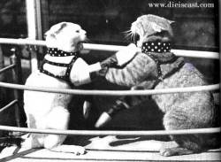
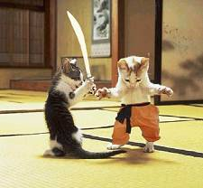

Breaking News from the Players
and their Agents
Cork Bowl 18
|
Williamson
Reveals Howard's Secret Dealings
October 13th - I will start the trash
talking with the person who has tarnished the image of the league with the
things he has done off the field: Greg Howard. Greg and I have been friends
for a while - even close friends. However, over the past 5-6 years he has
been drifting further and further away; he has become especially quiet and
has kept to himself ever since Vick was busted for his dog fighting ring.
Initially I didn't think much of it until a recent visit at his place in
Indiana. That's when I came across these pictures:


After finding these pictures, I did
some snooping around and found cages with 50-60 cats in the basement. I
took a picture of the fight ring that he had in the basement:
I don't want to see Greg continue down this path of
destruction. He continues to tarnish the league by his off the field shananigans.
We may want to consider an intervention to stop the cat fights that he is
involved with.
A Concerned,
Josh Williamson
Back to top
Williamson Finds
Wilson's Other Passion
October 17th - So, Brooks Wilson...he's
actually still able to make it to the game? I thought his ski team would
frown on that:
http://www.teamnautique.com/ski_BrooksWilson.html
He's much younger than I remember him to be...
--Josh--
Back to top
Williamson
Continues to Call out Pronghorns
October 20th - I found some film footage of the Pronghorns:
And some vintage Tony Cork video (decide which one he is):
Back to top
Willy Truitt
Says Kevin Ryan in Best Shape of His Career
October 22nd - Those who doubt the
resolve of Kevin Ryan, check no further than this video
shot outside the home of Ryan.
Kevin is seen walking left, walking
right, spin move, and most-importantly, game-shape stamina.
Signs also point to Mr. Ryan having
signed a new personal services agreement with Pepsi. "Be Young, Be
Fun, Drink Pepsi because Kevin Ryan says so!", is the new slogan according
to sources imbedded deep within the league. How the league offices, long
sponsored by all 23 flavors of Dr. Pepper feel about Ryan's new association
is unknown at this time.
Back to top
Willy Truitt's Doctor Reveals Possible Injury
INDIANAPOLIS (Oct 28, 2008) -- Dr. Tim Reis may have violated Spider
Monkey Quarterback Willy Truitt's patient privacy rights in a phone
interview with Obscure Sports Monthly. Reis was being interviewed in regards
to weight pills and athletes, when the conversation turned to Cork Bowl
18.
Reis mentioned that Cork Bowl star Truitt had come to see him recently,
with an injured knee from a walking incident in Indianapolis. He said
Truitt was concerned about getting the knee back to 100-percent for game
action on the 22nd of November, and wanted to know all of his options.
Reis mentioned physical therapy as the preferred, and recommended
option, but Truitt asked about amputation. "He was confident he could still
guard Howard with one leg, but I insisted he did not want to go through
life with only one leg," said Reis. "I prescribed him some Tylenol 3
and a vat of Icy Hot, so he should be good to go. He might want to duck
tape it up on game day, as it is his planting (right) knee."
Truitt was unavailable for comment, but team publicist Dave Meggett
insisted that it was business as usual for the 12-year veteran, including
some deep-ball drills to the Oak tree behind his house Sunday
afternoon.
Back to top
Kirby Newell Finds Harsh Words from Ryan Tomlinson about Chris Cork
October 31 -- Long-time Cork Bowl great Kirby Newell recently found an interesting quote from Ryan Tomlinson in an article found in 'Sports Illustrated for Nancy Boys' (for which Tomlinson was the feature story). In reference to Chris Cork, Tomlinson said, ""I'm tired of nancy boys like Chris Cork who are more worried about themselves than the team. He cares more about his stats than team goals. I'm old elementary school. You can't play with em', you surely can't win with em', and you can't coach with em'. And, he might be first cousins to Casper the ghost."
Back to top
Cork Blasts Trimble's Toughness
November 6 -- This past week I completed the Monumental Marathon in Indianapolis in 4 hours 24 minutes and 23 seconds. It doesn't sound very fast, but it would have totally dominated Robert Trimble's time of 4:29:10 when he ran the Louisville Marathon in 2004. This is interesting on many levels.
Trimble was in peak physical condition at the time of his marathon having recently graduated from high school after a stellar cross country and track career. He was a young, spry, athletic lad. On the other hand, I am a 30 year old man that hadn't run in years before starting to train for the race. I even got sick three weeks before and had to miss two weeks of training - further slowing down my finishing time. My only athletic events from the past five years have been church softball games and Cork Bowl. There is no reason whatsoever I should have been able to run a marathon faster than Trimble. Not only that, but Trimble didn't even play in Cork Bowl that year. I can only assume he was too exhausted from barely cracking 4 1/2 hours in the marathon a month before the big game.
I'm sure Trimby has a reason for his 4:29:10 performance, but the only thing I can think of is that he's just not got the mental toughness that I have. Not only did I run a faster marathon than he did in my first attempt, but I will follow that up with an outstanding performance in Cork Bowl just three weeks later. I'm not even sure if Trimble is going to play this year - I haven't heard anything from him since he returned from chasing sled dogs around Alaska this past summer. If he does show up, he'll probably wind up hurting his ankle again or finding some reason not to have to guard me on defense because we all know what happened the last time he tried (Cork Bowl 16 - 16 catches, 5 touchdowns). Consider the gauntlet THROWN DOWN.
--Ocho Siete--
Back to top
Back
to Cork Bowl